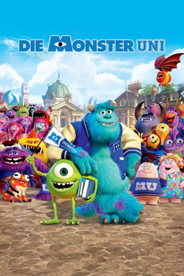

gesehen am 18.03.2015
gesehen am 18.03.2015Alternativ: Monsters University gesehen am 18.03.2015
 
 IMDB-Wertung: 7.3 / 10
IMDB-Wertung: 7.3 / 10  Metascore:
Metascore: 
Mike hat einen Traum: Er möchte professioneller Schrecker werden, doch muss er dafür die hohe Kunst des Erschreckens lernen. Dafür macht sich Mike auf den Weg zur Monster-Universität – eine renomierte Einrichtung für jede Art von Monster. Das Aushängeschild der Uni sind die Schreckwissenschaften, in der sich Mike einschreibt. Er ist glücklich endlich ein Student zu sein und lernt im Studentenwohnheim andere Monster kennen, wie Jeff, Thaddeus, Terry, Terri, Needleman und Smitty, sowie seinen neuen Mitbewohner Sulley. Nach anfänglicher Begeisterung und viel Spaß mit seinen neuen Freunden muss Mike schnell feststellen, dass sein Studium alles andere als ein Spaziergang wird. Gute Noten sind nicht alles, denn die Art des Erschreckens ist entscheidend. Ein harter Konkurrenzkampf bricht zwischen Mike und Sulley aus.
Jahr: 2013
Dauer: 104 Minuten
FSK: 0
Land: USA Studio: Walt Disney Studios Motion PicturesTonspuren: DD2.0 - ,
Untertitel: Englisch,
Auflösung: 720p (1280x720) Größe: 3553 MB
Genre: Animation/Trick, Abenteuer, Komödie, Familie, Fantasy
Regisseur: Dan Scanlon
Drehbuch: Dan Scanlon, Daniel Gerson, Robert L. Baird, Daniel Gerson, Robert L. Baird
Soundtrack: Randy Newman
Darsteller:
Datei: X:\Kinder Disney HD\Monster AG\Monster Uni, Die (2013, FSKo.Al., 1280x720).mkv seit 02.03.2015
Festplatte: Kinder-Filme+Trick
 Alle Filme aus Gruppe 'Kinder Disney HD\Monster AG'
Alle Filme aus Gruppe 'Kinder Disney HD\Monster AG'